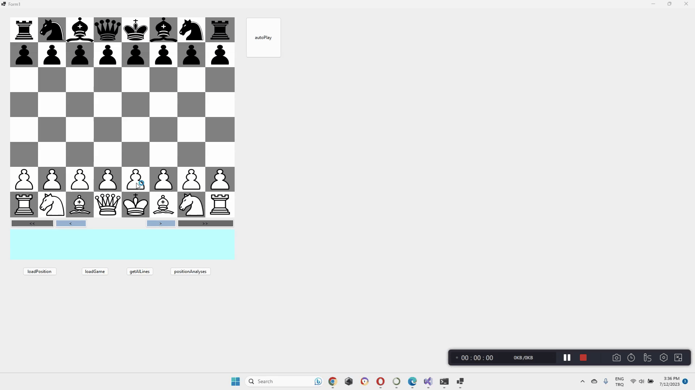

Serkan KAYMAK
ALMIŞ OLUP ÖNEMLİ GÖRDÜĞÜM UDEMY KURSLARI
-
• Asp.Net Core 7.0 ile Sıfırdan İleri Seviye Web Geliştirme
(Sadık TURAN)
-
• Asp.Net Core 7.0 ile Sıfırdan İleri Seviye Web Geliştirme (Sadık TURAN)
-
• Web Tasarım | HTML 5 | CSS 3 | Bootstrap 4 | JavaScript (Kaan Academy - Fatih Kaan Açıkgöz)
-
• Komple Uygulamalı Web Geliştirme Eğitimi (Sadık TURAN)
-
• Modern Web Geliştirme Kursu | Sıfırdan Sektörün Yükseklerine (Mustafa Murat ÇOŞKUN - Engin DEMİROĞ)
-
• Asp Net Core Mvc/Api Öğrenin: A-Z (Yavuz Selim KAHRAMAN)
-
• Asp.Net Core API + Token Bazlı Kimlik Doğrulama(JWT) (Fatih ÇAKIROĞLU)
-
• .Net 5.0 & Microservice Architecture Proje İnşa Etme (Hasan DENLİ, Ertuğrul YILMAZ)
-
• Asp.Net Core + RabbitMQ (Fatih ÇAKIROĞLU)
-
• AspNet Core Inversion Of Control(IoC) / Dependency Injection (Fatih ÇAKIROĞLU)
-
• Asp.Net Core + SignalR (Fatih ÇAKIROĞLU)
-
• (42 Saat) Sıfırdan Komple Java Geliştirici Kursu (Mustafa Murat Çoşkun - Engin DEMİROĞ)
-
• Design Patterns (Akin KALDIROĞLU)
-
• Android Mobil Uygulama Geliştirme Eğitimi | Java | 2023 (Kasım ADALAN)
-
• Python: Yapay Zeka ve Veri Bilimi için Python Programlama
-
• Deep Learning A-Z™| Python ile Derin Öğrenme (Dr. Merve Ayyüce KIZRAK)
-
• Python ile Yapay Zeka Projeleri | Machine & Deep Learning (Yazılım Teknolojileri Akademisi)
-
• (50 Saat) Python A-Z™: Veri Bilimi ve Machine Learning (Veri Bilimi Okulu , Vahit KESKİN)
-
• NLP - Natural Language Processing with Python (Jose PORTİLLA)
Tamamladığım Udemy kurslarıyla ASP.NET Core, web tasarım ve geliştirme, Java, Python ve yapay zeka gibi konularda kendimi geliştirdim. Bu kurslarda yer alan projeleri klon proje olarak başarıyla tamamladım.
GitHub Repo: kaymakserkan35/chess.app
Bu ufak çaplı proje, C# yeteneklerimi geliştirmek ve bir backend geliştiricisi olarak tasarım odaklı düşünme yeteneklerimi geliştirmek amacıyla oluşturduğum bir projedir. Satranç kurallarını baştan aşağıya kendim yazdım ve satrancın en özel kurallarını da göz önünde bulundurdum. Proje, OOP prensiplerine bağlı kalarak geliştirilmiş olup , iki farklı modülden oluşmaktadır.
İlk modül, projenin dinamiklerini ele alan bir backend kodu olarak görev yapmaktadır. Bu modül, satranç oyununun temel işlevlerini gerçekleştirir. Taşların hareketlerini kontrol eder, hamleleri doğrulayıp oyun durumunu günceller ve oyunun sonucunu belirler. Aynı zamanda, oyunun yapısını ve oyunun ilerlemesini yöneten algoritmalara sahiptir.
İkinci modül ise kullanıcı arayüzü olarak görev yapar. Bu modül, kullanıcıya grafiksel bir arayüz sağlar ve kullanıcının oyunu görsel olarak oynamasını sağlar. Taşların hareketlerini gösterir, geçerli hamleleri vurgular ve kullanıcıya oyun hakkında bilgi verir.
GitHub Repo: kaymakserkan35/NetLL.final

Bu proje, kişisel olarak kullanabileceğim bir İngilizce öğrenme masaüstü uygulamasıdır. Kelimeler , türlerine göre ayrılmıştır. Uygulama, filmlerde geçen bilinmeyen kelimelerin öğrenilebileceği bir araç sunmaktadır. Kullanıcılar, bilmedikleri kelimeleri istedikleri bilgi kategorilerine ayırabilir ve kelimenin geçtiği sahnelerin bir listesini tutarak daha sonra tekrar çalışabilirler.
GitHub Repo: kaymakserkan35/P-narSutWeb

Front-end bilgilerimi pekiştirmek için yaptığım bir klon projesidir.

Bu projenin temel amacı, döviz verilerinden göstergeler oluşturmaktır. Firebase veritabanı kullanılarak verilerin depolanması sağlanmış ve Node.js ile API'ler aracılığıyla veri çekme işlemi gerçekleştirilerek veritabanı 3 saatte bir güncellenmiştir. Veriler, USD doları bazında kaydedilmiş olup, istenen herhangi bir dövize çevrilebilir. Ham veriler, fiyat, düşük, yüksek ve kapanış sütunlarından oluşmaktadır.
Toplamda 18 farklı gösterge için kodlar yazılmış ve kullanıcıya en önemli olanları sunulmuştur. Uygulama, alım satım sinyalleri üretebilme yeteneğine sahiptir. Ayrıca, bir yapay zeka modeli oluşturulmuş ancak zaman kısıtlamaları nedeniyle projeye entegrasyonu sağlanmamıştır. Kullanıcılar, bu göstergeleri kullanarak analizler yapabilir ve her sinyal değişikliğinde bildirim alabilirler.